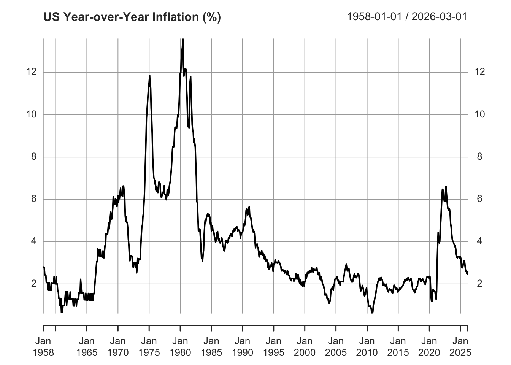
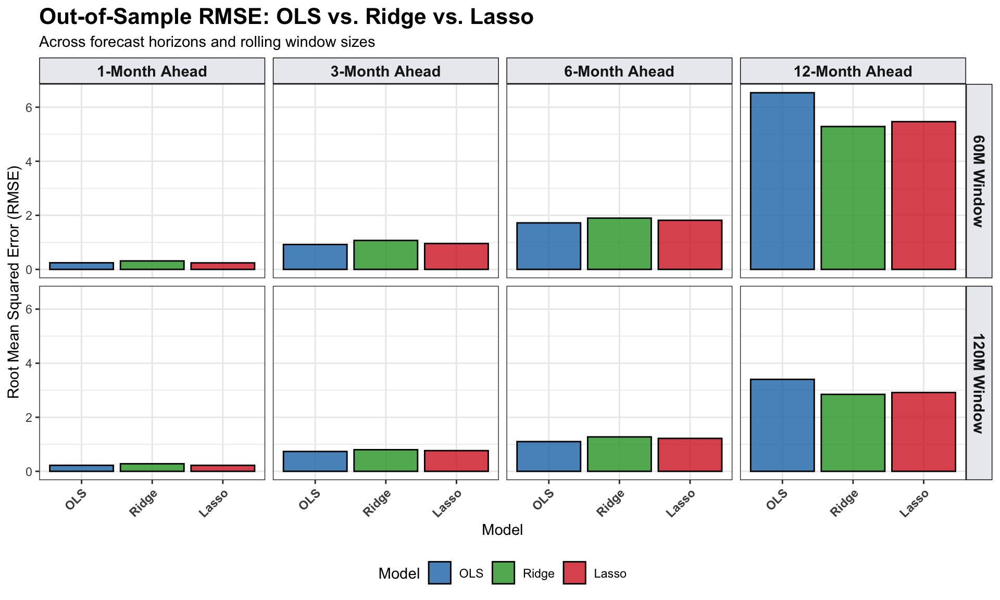

This practice session is divided into two parts. Both use US CPI inflation data retrieved directly from FRED and apply an AR(12) structure — that is, 12 monthly lags as predictors — to compare three forecasting models:
Model
Penalty
Key idea
OLS
None
Standard least squares; can overfit with many lags
Ridge
L2 (shrinks all coefficients)
Reduces variance, retains all predictors
Lasso
L1 (sets some coefficients to zero)
Performs variable selection automatically
Part A — Static Train/Test Split
Objective
Fit OLS, Ridge, and Lasso on a fixed 80/20 temporal split and compare their out-of-sample RMSE. Ridge and Lasso use a time-ordered validation scheme (no random k-fold) to respect the temporal structure of the data.
Setup
Load the required libraries. If any package is missing, install it first with install.packages("package_name").
Helper Function: Time-Ordered Tuning
Standard cross-validation randomly shuffles observations, which leaks future information into the past. The function below avoids this by holding out the last val_frac of the training sample as a temporal validation block.
Code
tune_glmnet_time_split <-function(X, y, alpha, val_frac =0.20, min_val =12,standardize =TRUE) { n <-nrow(X) v <-max(min_val, floor(val_frac * n))if (n <= v +5) stop("Not enough observations to create a validation split.") idx_tr <-1:(n - v) idx_va <- (n - v +1):n# Build a lambda grid from early training only fit0 <-glmnet(X[idx_tr, , drop =FALSE], y[idx_tr],alpha = alpha, standardize = standardize) lambda_grid <- fit0$lambda# Evaluate each lambda on the held-out temporal block fit_grid <-glmnet(X[idx_tr, , drop =FALSE], y[idx_tr],alpha = alpha, lambda = lambda_grid,standardize = standardize) pred_va <-predict(fit_grid, s = lambda_grid, newx = X[idx_va, , drop =FALSE]) y_va_mat <-matrix(y[idx_va], nrow = v, ncol =length(lambda_grid)) rmse <-sqrt(colMeans((pred_va - y_va_mat)^2)) lambda_best <- lambda_grid[which.min(rmse)]# Refit on the full training sample using the selected lambda fit_full <-glmnet(X, y, alpha = alpha, lambda = lambda_grid,standardize = standardize)list(fit = fit_full, lambda = lambda_best, rmse_path = rmse, v = v)}
Step 1 — Retrieve Inflation Data
We download the US Core CPI (CPILFESL) from FRED and compute year-over-year inflation as a percentage change over 12 months.
Code
cat("Retrieving US CPI data from FRED...\n")
Retrieving US CPI data from FRED...
Code
#getSymbols("CPILFESL", src = "FRED")CPILFESL <-readRDS("../data/CPILFESL.rds")inflation <-ROC(CPILFESL, n =12, type ="discrete") *100inflation <-na.omit(inflation)colnames(inflation) <-"Inflation"plot(inflation, main ="US Year-over-Year Inflation (%)")

Step 2 — Build the AR(12) Feature Matrix
The embed() function stacks lagged values row by row. The result is:
Y: the inflation value at time \(t\)
X: the 12 preceding monthly values (\(t-1, \ldots, t-12\))
Code
p <-12y_vec <-as.numeric(inflation)N <-length(y_vec)lagged_matrix <-embed(y_vec, p +1)Y <- lagged_matrix[, 1]X <- lagged_matrix[, 2:(p +1)]colnames(X) <-paste0("Lag_", 1:p)dates <-index(inflation)[(p +1):N]
Step 3 — Temporal Train/Test Split (80/20)
We split the data chronologically: the first 80% is used for training, and the last 20% is reserved for out-of-sample evaluation. No observation from the future is used to fit any model.
Ridge shrinks all coefficients toward zero proportionally. The regularization strength \(\lambda\) is selected via time-ordered validation (alpha = 0).
Part B — Rolling Windows & h-Step Ahead Forecasting
Objective
Extend the analysis by evaluating forecasting performance across multiple horizons (\(h = 1, 3, 6, 12\) months ahead) and rolling window sizes (60 and 120 months). This tests whether regularization remains beneficial as the forecasting difficulty increases.
Key Concepts
Direct h-step forecasting fits a separate model for each horizon \(h\), predicting \(y_{t+h}\) directly from lags at time \(t\). This avoids compounding errors from iterated one-step forecasts.
Rolling windows retrain the model at each evaluation step using only the most recent \(w\) observations, allowing the model to adapt to structural changes over time.
Setup
Code
library(quantmod)library(glmnet)library(ggplot2)library(tidyr)library(dplyr)cat("Retrieving US CPI data from FRED...\n")
Retrieving US CPI data from FRED...
Code
#getSymbols("CPILFESL", src = "FRED", auto.assign = TRUE)CPILFESL <-readRDS("../data/CPILFESL.rds")inflation <-ROC(CPILFESL, n =12, type ="discrete") *100inflation <-na.omit(inflation)y_vec <-as.numeric(inflation)N <-length(y_vec)
Experiment Parameters
Code
p <-12# AR lagshorizons <-c(1, 3, 6, 12) # Forecast horizons (months ahead)windows <-c(60, 120) # Rolling window sizes: 5 and 10 yearsOOS_steps <-120# Evaluate on last 10 years of data
Rolling Forecast Loop
For each combination of horizon \(h\) and window size \(w\), the loop:
Aligns features and targets for direct \(h\)-step forecasting
Fits OLS, Ridge, and Lasso on the rolling training window
Produces a one-step prediction for the current out-of-sample observation
Code
results_df <-data.frame()cat("\nStarting Rolling Forecast Experiment...\n")
Starting Rolling Forecast Experiment...
Code
for (h in horizons) {for (w in windows) {cat(sprintf(" -> Horizon: %2d month(s) | Window: %3d months\n", h, w)) preds_ols <-numeric(OOS_steps) preds_ridge <-numeric(OOS_steps) preds_lasso <-numeric(OOS_steps) actuals <-numeric(OOS_steps)for (step in1:OOS_steps) { i <- N - OOS_steps + step # Index being predicted origin_t <- i - h # Last observation available at forecast time# Direct h-step feature alignment train_target_idx <- (origin_t - w +1):origin_t train_feature_idx <- train_target_idx - h Y_train <- y_vec[train_target_idx] X_train <-matrix(NA, nrow = w, ncol = p)for (lag in1:p) X_train[, lag] <- y_vec[train_feature_idx - lag +1] X_test <-matrix(NA, nrow =1, ncol = p)for (lag in1:p) X_test[1, lag] <- y_vec[origin_t - lag +1]colnames(X_train) <-colnames(X_test) <-paste0("Lag_", 1:p)# OLS train_df <-data.frame(Y = Y_train, X_train) preds_ols[step] <-predict(lm(Y ~ ., data = train_df), data.frame(X_test))# RidgesuppressWarnings({ mdl_ridge <-cv.glmnet(X_train, Y_train, alpha =0) }) preds_ridge[step] <-predict(mdl_ridge, s ="lambda.min", newx = X_test)# LassosuppressWarnings({ mdl_lasso <-cv.glmnet(X_train, Y_train, alpha =1) }) preds_lasso[step] <-predict(mdl_lasso, s ="lambda.min", newx = X_test) actuals[step] <- y_vec[i] } tmp <-data.frame(Horizon_Num = h,Window_Num = w,Horizon =factor(paste0(h, "-Month Ahead"), levels =paste0(horizons, "-Month Ahead")),Window =factor(paste0(w, "M Window"), levels =paste0(windows, "M Window")),OLS =sqrt(mean((actuals - preds_ols)^2)),Ridge =sqrt(mean((actuals - preds_ridge)^2)),Lasso =sqrt(mean((actuals - preds_lasso)^2)) ) results_df <-rbind(results_df, tmp) }}
The bar chart below compares RMSE across all horizon and window combinations. Look for patterns: does regularization help more at longer horizons? Does a larger window hurt or help?
Code
results_long <- results_df %>%select(Window, Horizon, OLS, Ridge, Lasso) %>%pivot_longer(cols =c(OLS, Ridge, Lasso),names_to ="Model", values_to ="RMSE") %>%mutate(Model =factor(Model, levels =c("OLS", "Ridge", "Lasso")))ggplot(results_long, aes(x = Model, y = RMSE, fill = Model)) +geom_bar(stat ="identity", position =position_dodge(),color ="black", alpha =0.8) +facet_grid(Window ~ Horizon) +labs(title ="Out-of-Sample RMSE: OLS vs. Ridge vs. Lasso",subtitle ="Across forecast horizons and rolling window sizes",x ="Model", y ="Root Mean Squared Error (RMSE)") +scale_fill_manual(values =c("OLS"="#1f77b4","Ridge"="#2ca02c","Lasso"="#d62728")) +theme_bw() +theme(plot.title =element_text(face ="bold", size =16),strip.background =element_rect(fill ="#e9ecef", color ="black"),strip.text =element_text(face ="bold", size =11),axis.text.x =element_text(angle =45, hjust =1, face ="bold"),legend.position ="bottom" )

Discussion Questions
In Part A, which model achieves the lowest out-of-sample RMSE? Does the result surprise you given the number of predictors?
Which Lasso coefficients are set exactly to zero? What does this tell you about the most informative lags?
In Part B, how does RMSE evolve as the horizon \(h\) increases? Is the ranking between models stable?
Compare the 60-month vs. 120-month rolling windows. When would a shorter window be preferable?
Why is time-ordered validation (Part A) more appropriate than random k-fold for this type of data?